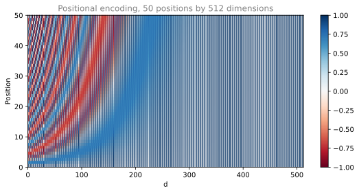
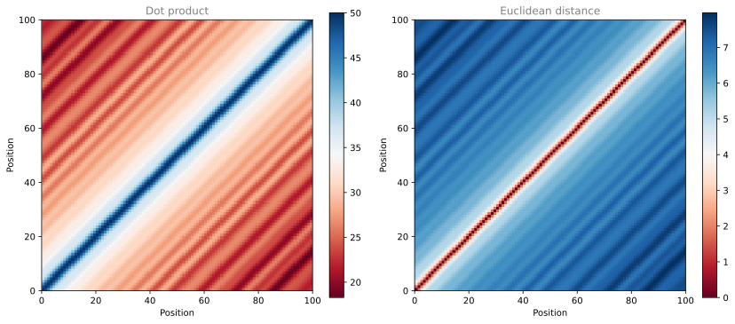
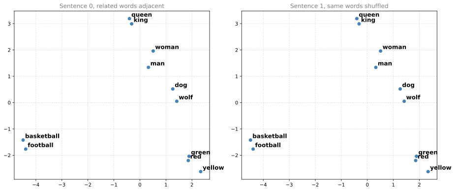

Implement positional encoding, masking, scaled dot-product attention and the encoder and decoder stacks, then measure what position does to word embeddings.
Published
Aug 31, 2026
Transformer Network took the architecture apart and explained each piece. This lab builds it. Every component described on that page becomes code here, in the order the data flows through it, ending with a complete Transformer model that maps one token sequence to a distribution over the next.
The lab merges two of the course notebooks, the graded Transformer Network assignment and the ungraded Transformer Pre-processing lab, because the second one answers a question the first one raises and then leaves hanging. The assignment builds positional encoding out of sine and cosine curves and asserts that adding it to a word embedding “does not significantly distort” the embedding. The pre-processing lab measures that claim on real GloVe vectors. Those two things belong next to each other, so positional encoding is built and then immediately interrogated before the lab moves on to masking.
By the end of this lab you will be able to
compute the sine and cosine positional encodings and explain why paired dimensions share an angle,
show that for an even encoding size every positional encoding vector has the same norm, and that the distance between two of them depends only on how far apart they are,
measure what happens to word embeddings when positional encoding is added at different relative weights,
build padding and look-ahead masks and see what each one removes from a softmax,
implement scaled dot-product attention from the query, key and value matrices,
assemble encoder and decoder layers with residual connections and layer normalization, and stack them into a full transformer.
ImportantUpdated From the Original Assignment
The two source notebooks were written against TensorFlow 2.3 and Keras 2. This page runs on TensorFlow 2.21 and Keras 3.15 as installed in the project environment. Ten things changed, on 2026-08-31.
Non-tensor arguments must now be passed by keyword. Keras 3 raises ValueError: Only input tensors may be passed as positional arguments from Layer.__call__, so the assignment’s self.enc_layers[i](x, training, mask) and self.dec_layers[i](x, enc_output, training, look_ahead_mask, padding_mask) both fail outright. Every such call on this page names its arguments.
The attention mask must be passed as attention_mask=, and passing it positionally is silently wrong. In Keras 2 the signature was call(query, value, key=None, attention_mask=None, ...), so the assignment’s self.mha1(x, x, x, look_ahead_mask, return_attention_scores=True) reached the mask. Keras 3 inserted query_mask, value_mask and key_mask ahead of it, so that same fourth positional argument now binds to query_mask, and the first thing call does is overwrite query_mask with the Keras mask metadata attached to the query tensor. The value passed in is discarded outright. Nothing raises, and the shapes still work. On a three-token sequence with the last position masked off, the positional form returns attention scores of [0.887, 0.095, 0.018], identical to passing no mask at all, while attention_mask= correctly drives the third column to 0.0. This is the one change on the page that a reader could carry into their own code and never notice.
The mask parameter is renamed padding_mask. Keras 3 treats a call argument named mask as part of its automatic mask-propagation protocol, and a layer that accepts one without declaring supports_masking triggers UserWarning: Layer ... was passed an input with a mask attached to it. However, this layer does not support masking. The mask here is an ordinary tensor argument rather than a Keras mask, so it is named for what it is.
keras.preprocessing.text.Tokenizer is gone from standalone Keras. Importing it raises ModuleNotFoundError on Keras 3.15. TensorFlow still ships a copy at tf.keras.preprocessing.text.Tokenizer, which resolves to keras.src.legacy.preprocessing.text.Tokenizer, so the original import path survives on that route only. The pre-processing lab used it on two eleven-word sentences to get a vocabulary and index them, which is written out explicitly here in three lines rather than reached for through a legacy shim. It reproduces the notebook’s word_index and its padded matrix exactly, and the explicit version also shows the thing the original hid, which is that index 0 is deliberately left free for padding.
pad_sequences is imported from keras.utils. The notebook’s keras.preprocessing.sequence.pad_sequences still resolves and is the identical callable, so this is a house style choice rather than a migration. keras.utils is where Keras 3 documents it.
Imports use standalone keras rather than tensorflow.keras. In TensorFlow 2.21 the two resolve to the same Keras 3 objects, so this is a house style choice and not a forced migration. TensorFlow is still imported for the tensor operations the lab performs directly, such as tf.matmul and tf.linalg.band_part.
The autograder is stripped. The eight *_test calls, the from public_tests import *, and the All tests passed prints are gone. The subjects those tests covered are printed and explained instead rather than asserted, namely the angle matrix, the encoding shape and its first rows, both masks, the attention weights and their sum, the effect of a mask on a softmax, layer output shapes, the normalization statistics layer normalization produces, the difference training=True makes, the triangular structure of the decoder’s self-attention, the zero weight cross-attention gives a padded source position, the attention dictionary’s keys, count and shapes, and the final distribution summing to one.
The decoder’s cross-attention mask is built from the source sequence, not the target. The assignment’s Transformer_test passes create_padding_mask(sentence_lang_b) as dec_padding_mask, where sentence_lang_b is the target. The keys and values in that attention block come from the encoder, so the mask has to describe the source. The test passes anyway because both sequences are five tokens long, which gives the wrong mask the right shape. Review question 3 covers why this is the rule.
The masking demonstration’s shapes are corrected. The notebook adds a (3, 1, 5) mask to (3, 5) logits, which broadcasts to (3, 3, 5) and pairs every sequence’s scores with every sequence’s mask. The printed row happens to look right. This page gives the scores an explicit query axis so the shapes match.
The two notebooks are merged and reordered. The pre-processing lab’s material appears under “Properties of the Encoding” and “Positional Encoding Meets Word Embeddings” immediately after positional encoding is built, rather than as a separate lab that reintroduces the same function.
Left alone are the architecture, both formulas, the GloVe file, the two engineered sentences, and the numbers the notebooks state, which this page recomputes rather than quoting. The full-model demonstration uses the assignment’s own Transformer_test settings and the EncoderLayer demonstration uses its fixture’s settings unchanged. The DecoderLayer and Decoder demonstrations use fewer heads and layers than their fixtures, which specify eight heads and seven layers, purely so their printed matrices fit on the page.
NoteLab Files Download
The only external file this lab reads is the GloVe embedding, which is too large to host here.
glove.6B.zip (862 MB), the 6-billion-token GloVe release of Pennington et al. (2014). It holds the 50d, 100d, 200d and 300d files. This lab reads glove.6B.100d.txt from it, 347 MB uncompressed. The 50d file in the same archive is the one Operations on Word Vectors and Emojify use.
The seven diagrams that ship with the two notebooks are mirrored for completeness, though the page does not display them, because Transformer Network draws the same structures in the site’s own style.
public_tests.py is grader scaffolding and is deliberately not hosted.
Everything the lab needs is below. TensorFlow supplies the tensor operations, Keras supplies the layers, and scikit-learn supplies the PCA used to put 100-dimensional vectors on a page.
A recurrent network is fed one token at a time, so order arrives for free. A transformer is fed the whole sequence at once, which is what makes it fast, and that means order has to be supplied separately. The fix is to add a vector to each word embedding that depends only on the word’s position, using these two formulas.
Here \(d\) is the dimension of the embedding, \(pos\) is the position of the word in the sequence, and \(k\) indexes the dimensions of the encoding vector with \(i = k \,//\, 2\).
Why sine and cosine rather than simply writing the position number in? Because the encoding is added to the word embedding, not concatenated to it. Adding the integers \(0, 1, 2, \ldots\) would swamp the semantic content, since a word at position 40 would be shifted forty units in every direction. Sine and cosine stay between \(-1\) and \(1\), small enough that the embedding survives, and “Positional Encoding Meets Word Embeddings” below measures exactly how much survives.
Sine and Cosine Angles
The two formulas look different but their inner terms are identical.
\[
\theta(pos, i, d) = \frac{pos}{10000^{\frac{2i}{d}}}
\]
Dimension \(k = 0\) needs \(2i = 0\), so \(i = 0\). Dimension \(k = 1\) needs \(2i + 1 = 1\), so \(i = 0\) again. The pair shares an angle, one taking its sine and the other its cosine. The same holds for \(k = 2\) and \(k = 3\) at \(i = 1\), and on up the vector. So the encoding is a set of \(d/2\) angles, each read twice.
get_angles computes that matrix of angles. It takes a column vector of positions, a row vector of dimension indices, and the encoding size, and relies on NumPy broadcasting to produce one angle per position and dimension.
def get_angles(pos, k, d):""" Get the angles for the positional encoding Arguments: pos -- Column vector containing the positions [[0], [1], ..., [N-1]] k -- Row vector containing the dimension span [[0, 1, 2, ..., d-1]] d (integer) -- Encoding size Returns: angles -- (pos, d) numpy array """# Get i from dimension span k. Integer division pairs k=0,1 to i=0,# k=2,3 to i=1, and so on, which is what makes each angle appear twice. i = k //2 angles = pos / np.power(10000, (2* i) / np.float32(d))return angles
Four positions and an encoding size of eight is small enough to read the whole matrix. The pairing is visible directly in the output, since columns 0 and 1 are equal, columns 2 and 3 are equal, and so on. Along a row the angle shrinks by a factor of ten each time \(i\) increases, because \(10000^{2i/8} = 10^{i}\) for \(d = 8\).
Row 0 is all zeros, because position 0 divided by anything is 0. That matters later, since \(\sin(0) = 0\) and \(\cos(0) = 1\), so the first token’s encoding alternates between those two values rather than being the zero vector.
Sine and Cosine Positional Encodings
Now apply sine to the even dimensions and cosine to the odd ones. NumPy’s strided slicing does this without a loop, since angle_rads[:, 0::2] selects every even column and angle_rads[:, 1::2] every odd one.
The function returns the matrix with a leading axis of size 1 so it broadcasts against a batch of embeddings of shape (batch, sequence, \(d\)) later on.
def positional_encoding(positions, d):""" Precomputes a matrix with all the positional encodings Arguments: positions (int) -- Maximum number of positions to be encoded d (int) -- Encoding size Returns: pos_encoding -- (1, positions, d) A matrix with the positional encodings """ angle_rads = get_angles(np.arange(positions)[:, np.newaxis], np.arange(d)[np.newaxis, :], d)# Sine on the even indices, 2i angle_rads[:, 0::2] = np.sin(angle_rads[:, 0::2])# Cosine on the odd indices, 2i+1 angle_rads[:, 1::2] = np.cos(angle_rads[:, 1::2]) pos_encoding = angle_rads[np.newaxis, ...]return tf.cast(pos_encoding, dtype=tf.float32)
The assignment’s unit test checked the shape and a handful of values. Both are printed here instead. A 50-position encoding at \(d = 512\) gives a (1, 50, 512) tensor, and the first row is the alternating zeros and ones the previous section predicted.
pos_encoding = positional_encoding(50, 512)print("pos_encoding.shape =", pos_encoding.shape)print("row for position 0, first 8 dimensions:", pos_encoding[0, 0, :8].numpy())print("row for position 1, first 8 dimensions:", np.round(pos_encoding[0, 1, :8].numpy(), 4))
pos_encoding.shape = (1, 50, 512)
row for position 0, first 8 dimensions: [0. 1. 0. 1. 0. 1. 0. 1.]
row for position 1, first 8 dimensions: [0.8415 0.5403 0.8219 0.5697 0.802 0.5974 0.7819 0.6234]
Plotted as a heatmap, the low dimensions on the left oscillate quickly down the position axis and the high dimensions on the right barely change at all. That range of frequencies is the point. A fast dimension distinguishes neighboring positions, and a slow one distinguishes the start of a long sequence from its end.
%config InlineBackend.figure_formats = ['svg']fig, ax = plt.subplots(figsize=(9, 4))# rasterized=True embeds the mesh as an image inside the SVG while the axes and# text stay vector. Without it these 25,600 cells become 25,600 SVG paths and# the figure weighs 4.9 MB.mesh = ax.pcolormesh(pos_encoding[0], cmap='RdBu', rasterized=True)ax.set_xlabel('d')ax.set_xlim((0, 512))ax.set_ylabel('Position')ax.set_title('Positional encoding, 50 positions by 512 dimensions', fontsize=12, color='gray')fig.colorbar(mesh, ax=ax)plt.show()

The 50 by 512 positional encoding matrix. Each row is one position’s encoding vector. Reading left to right along a row, the paired sine and cosine columns cycle rapidly at small \(i\) and slowly at large \(i\), because the angle \(pos / 10000^{2i/d}\) shrinks as \(i\) grows. Reading top to bottom down a column shows how fast that one dimension distinguishes consecutive positions. No two rows are identical, which is what makes the encoding usable as a position label.
Properties of the Encoding
The heatmap shows the rows are all different. That is necessary but weak. What the model actually needs is for the relationship between two encodings to say something about the distance between two positions, and the sine and cosine construction delivers two properties that make it so.
From here on the lab switches to the settings the pre-processing work uses, an encoding size of 100 to match the GloVe vectors loaded shortly, and a maximum sequence length of 100. For comparison, the base model of Vaswani et al. (2017) uses a model width of 512 and its larger model uses 1024, so these sit well below the published sizes.
The first property is that every encoding vector has the same length. Each of the \(d/2\) angle pairs contributes \(\sin^2\theta + \cos^2\theta = 1\), so the squared norm is exactly \(d/2\) for every position, and the norm is \(\sqrt{d/2}\). For \(d = 100\) that is \(\sqrt{50} \approx 7.0711\), regardless of which position you pick. This depends on \(d\) being even, so that every dimension has a partner. With an odd \(d\) the last dimension is unpaired, the norm varies slightly with position, and the argument below about comparing encodings weakens. Every configuration on this page uses an even \(d\), and so does every transformer this course has covered.
for pos in (0, 34, 99):print(f"||PE[{pos}]|| = {float(tf.norm(pos_encoding[0, pos, :])):.6f}")print("sqrt(d / 2) =", float(np.sqrt(EMBEDDING_DIM /2)))
Constant norm matters because the dot product of two encodings is then \(\lVert a \rVert \lVert b \rVert \cos\phi\) with the magnitudes fixed. Any variation in a dot product between two encodings comes from the angle between them and never from one of them simply being bigger.
The second property is that the distance between two encodings depends only on their separation, not on where they sit. Move a fixed gap of \(k = 2\) along the sequence and the distance is the same whether you measure it at position 10 or position 70.
k =2for pos in (0, 10, 40, 70, 90): gap = tf.norm(pos_encoding[0, pos, :] - pos_encoding[0, pos + k, :])print(f"||PE[{pos}] - PE[{pos + k}]|| = {float(gap):.6f}")
This is the property that lets a model reason about relative position. If the gap between two encodings encodes only the separation, then a head that learns “attend three tokens back” can apply that rule anywhere in the sequence rather than learning it separately for every absolute position.
Both properties show up at once if the whole matrix of pairwise comparisons is plotted. The notebook calls the first of these a correlation, and it is worth being precise about what it actually computes. \(PE \cdot PE^{\mathsf{T}}\) is the matrix of dot products, a Gram matrix. Constant norm makes it a fixed multiple, \(d/2\), of the matrix of cosine similarities, which is the useful thing to notice. It is not a Pearson correlation, which would also subtract each vector’s mean. It should be symmetric with its maximum on the main diagonal, since a vector is most similar to itself, and should be much smaller far from the diagonal. Euclidean distance should be its rough mirror image, zero on the diagonal and larger away from it.
%config InlineBackend.figure_formats = ['svg']# The Gram matrix, every encoding's dot product with every other.gram = tf.matmul(pos_encoding, pos_encoding, transpose_b=True).numpy()[0]# Euclidean distance between every pair. The matrix is symmetric and the# diagonal is zero, so only the upper triangle needs computing.eu = np.zeros((MAX_SEQUENCE_LENGTH, MAX_SEQUENCE_LENGTH))for a inrange(MAX_SEQUENCE_LENGTH):for b inrange(a +1, MAX_SEQUENCE_LENGTH): eu[a, b] = tf.norm(tf.math.subtract(pos_encoding[0, a], pos_encoding[0, b])) eu[b, a] = eu[a, b]fig, axes = plt.subplots(1, 2, figsize=(12, 5))for ax, data, title in ((axes[0], gram, 'Dot product'), (axes[1], eu, 'Euclidean distance')):# Rasterized for the same reason as the previous heatmap. mesh = ax.pcolormesh(data, cmap='RdBu', rasterized=True) ax.set_xlabel('Position') ax.set_ylabel('Position') ax.set_xlim((0, MAX_SEQUENCE_LENGTH)) ax.set_aspect('equal') ax.set_title(title, fontsize=12, color='gray') fig.colorbar(mesh, ax=ax)plt.tight_layout()plt.show()

Every position compared against every other. On the left, the dot product between encoding vectors, brightest on the main diagonal where a vector meets itself and generally smaller away from it. On the right, the Euclidean distance between the same pairs, zero on the diagonal and larger away from it. Both are symmetric, as they must be. Neither is monotone in the separation, and the dot product in particular wobbles once the separation is large, as individual sinusoidal components drift back into phase. What matters is that the structure near the diagonal is strong and orderly, which is what makes small separations distinguishable from large ones.
These two plots are worth keeping as a check on any positional encoding, learned or hand-built. For this sinusoidal construction the diagonal structure is what makes the encoding legible, since a dot product is exactly what a query and a key form. A learned encoding could in principle carry position in a form the query and key projections recover without its raw Gram matrix looking like this, so treat these plots as a check on a hand-built scheme rather than a universal test.
Positional Encoding Meets Word Embeddings
The claim to test is that adding positional encoding enriches a word embedding with order information without destroying its meaning. To test it you need real word vectors, so this section loads GloVe and watches what happens to eleven words when position is added at different strengths.
Loading Pretrained Embeddings
The GloVe file is plain text, one word per line followed by its 100 numbers. Reading all 400,000 of them takes a couple of seconds and about 300 MB of memory.
embeddings_index = {}withopen(GLOVE, encoding='utf-8') as f:for line in f: values = line.split() embeddings_index[values[0]] = np.asarray(values[1:], dtype='float32')print('Found %s word vectors.'%len(embeddings_index))print('d_model:', embeddings_index['hi'].shape)
Found 400000 word vectors.
d_model: (100,)
The 100 features per word match EMBEDDING_DIM, which is not a coincidence. Positional encoding is added to the embedding, so the two have to be the same width.
Two Engineered Sentences
The test needs sentences where the semantic groupings are obvious and the only thing that differs is order. These two are built for it. Neither means anything. Both contain the same eleven words, drawn from four clear groups, namely royalty and people, animals, sports and colors. In the first sentence the related words sit next to each other. In the second the same words are scattered.
texts = ['king queen man woman dog wolf football basketball red green yellow','man queen yellow basketball green dog woman football king red wolf']
Tokenizing means turning each sentence into a list of integers, one per word, using a shared dictionary. Counting the words and numbering them from 1 does the whole job here. Numbering starts at 1 rather than 0 so that index 0 stays free to mean “padding”, which is the convention the masking section relies on later.
counts = Counter(word for text in texts for word in text.split())word_index = {word: i +1for i, (word, _) inenumerate(counts.most_common(MAX_NB_WORDS))}sequences = [[word_index[word] for word in text.split()] for text in texts]print('Found %s unique tokens.'%len(word_index))print(word_index)
Every word appears exactly twice, once in each sentence, so the counts are all tied and the numbering falls back on first appearance. That is why the first sentence indexes to a clean run from 1 to 11.
pad_sequences then stretches both lists to MAX_SEQUENCE_LENGTH by appending zeros, so that the two sentences form one rectangular array. Both sentences are 11 words long, so both get 89 zeros.
data = pad_sequences(sequences, padding='post', maxlen=MAX_SEQUENCE_LENGTH)print("data.shape =", data.shape)print("sentence 0, first 13 entries:", data[0, :13])print("sentence 1, first 13 entries:", data[1, :13])
The two rows hold the same eleven numbers in different orders, which is the entire experimental design.
Building the Embedding Layer
Only eleven words are needed, so rather than loading all 400,000 vectors into a Keras layer, the lab builds a small matrix with one row per word in the vocabulary plus a leading zero row for the padding index.
embedding_matrix = np.zeros((len(word_index) +1, EMBEDDING_DIM))for word, i in word_index.items(): embedding_vector = embeddings_index.get(word)if embedding_vector isnotNone:# Any word missing from GloVe keeps its row of zeros. embedding_matrix[i] = embedding_vectorprint("embedding_matrix.shape =", embedding_matrix.shape)print("words with no GloVe vector:", [w for w, i in word_index.items() ifnot embedding_matrix[i].any()] or"none")
embedding_matrix.shape = (12, 100)
words with no GloVe vector: none
The layer is frozen with trainable=False, because nothing here is being trained. It is a lookup table that turns the integer array into vectors.
The shape is (2 sentences, 100 positions, 100 features). The last axis is the one holding meaning.
Semantic Space Without Position
To see 100-dimensional vectors on a page they have to be projected down to two. PCA finds the two directions along which the eleven vectors vary most and drops everything else, which is lossy but preserves the broad grouping.
The helper below fits a separate PCA per sentence, over just the eleven real words rather than the 89 padding positions, and labels each point with its word. The original notebook recovered those labels by indexing a list of vocabulary keys, which happens to work only because the indices here run 1 to 11 in order. An explicit index-to-word map is used instead so the helper stays correct for any vocabulary.
index_to_word = {i: word for word, i in word_index.items()}def plot_words(ax, emb, sentence, title):"""Project one sentence's vectors to 2D with PCA and label each point.""" seq = sequences[sentence] points = PCA(n_components=2).fit_transform(np.asarray(emb)[sentence, 0:len(seq), :]) ax.scatter(points[:, 0], points[:, 1], color='#4682B4', zorder=3)for i, index inenumerate(seq): ax.annotate(index_to_word[index], (points[i, 0], points[i, 1]), fontsize=12, fontweight='bold', xytext=(4, 4), textcoords='offset points') ax.grid(linestyle='--', alpha=0.4) ax.set_title(title, fontsize=12, color='gray')return points
With only the GloVe vectors in play, the two sentences produce the same picture. PCA is fit on the set of vectors, and both sentences contain the same set, so the plots are identical up to the order in which the points were added.
%config InlineBackend.figure_formats = ['svg']fig, axes = plt.subplots(1, 2, figsize=(13, 5.5))plot_words(axes[0], embedding, 0, 'Sentence 0, related words adjacent')plot_words(axes[1], embedding, 1, 'Sentence 1, same words shuffled')plt.tight_layout()plt.show()

The eleven GloVe vectors projected to two dimensions, for the ordered sentence on the left and the shuffled one on the right. The four semantic groups separate cleanly, with the colors together, the two sports together, the animals together, and the four people terms together. The two panels are identical because a word embedding is a property of the word alone. Reordering a sentence cannot move a single point, which is precisely the limitation positional encoding exists to fix.
That identity is the problem stated as a picture. Feed either sentence to a model that sees only these vectors and it cannot tell the two apart.
Adding Position
Now add the positional encoding at equal weight and plot again.
The same eleven words after adding the positional encoding at a one-to-one weight. The two panels are now different, which is the whole objective, since the model can finally distinguish the two sentences. The semantic groups are still visible but strained, because a positional encoding of norm 7.07 is a substantial addition to GloVe vectors of comparable size. The two panels differ because the same word now sits at a different position in each sentence and therefore receives a different encoding.
The plots have changed a great deal, and the pictures alone make it hard to say how much is signal and how much is PCA reshuffling its axes. The distance between a specific pair of words is a firmer measurement. Take red and wolf, two words with no semantic relationship, which sit three tokens apart in the ordered sentence and adjacent in the shuffled one.
def word_distance(emb, sentence, word_a, word_b):"""Distance between two words' vectors within one sentence.""" seq = sequences[sentence] vectors = np.asarray(emb)[sentence]returnfloat(np.linalg.norm(vectors[seq.index(word_index[word_a])]- vectors[seq.index(word_index[word_b])]))for sentence in (0, 1): seq_words = [index_to_word[i] for i in sequences[sentence]] gap =abs(seq_words.index('red') - seq_words.index('wolf')) plural ="token"if gap ==1else"tokens"print(f"sentence {sentence}: 'red' and 'wolf' are {gap}{plural} apart")print(f" semantic only {word_distance(embedding, sentence, 'red', 'wolf'):.3f}")print(f" semantic + positional {word_distance(embedding_pos, sentence, 'red', 'wolf'):.3f}")
sentence 0: 'red' and 'wolf' are 3 tokens apart
semantic only 5.599
semantic + positional 7.374
sentence 1: 'red' and 'wolf' are 1 token apart
semantic only 5.599
semantic + positional 5.674
The semantic distance is identical in both sentences, as it must be, since the vectors do not know where the words sit. Once position is added the two stop being identical, and they separate in the right direction. The pair that is three tokens apart is pushed well beyond its semantic distance, while the adjacent pair barely moves. The gap between those two outcomes is the positional information, and before it was added there was no gap at all.
Choosing the Relative Weight
Position was added at full strength above, which is a strong dose. Weighting the two terms shows the trade-off directly. Let \(W_1\) scale the semantic part and \(W_2\) the positional part.
The shuffled sentence at three weightings. On the left the positional term dominates at ten to one, and the words arrange themselves in a smooth arc that tracks their position in the sentence rather than their meaning, with the semantic clusters entirely gone. In the middle both terms are equal and the picture is a compromise. On the right the semantic term dominates at ten to one, and the clusters return almost intact with position surviving as a small perturbation. The right-hand panel is what the transformer actually does, because scaling the embedding by \(\sqrt{d} = 10\) before adding the encoding is the same as setting \(W_1 = 10\) and \(W_2 = 1\).
The right-hand panel is not an arbitrary choice. Look ahead to the Encoder class and you will find the line
x *= tf.math.sqrt(tf.cast(self.embedding_dim, tf.float32))
sitting immediately before the positional encoding is added. For \(d = 100\) that multiplies the embedding by 10 while the encoding is added at 1, which is the ratio in the right-hand panel. The scaling is usually explained as keeping the embedding at a sensible magnitude for the layers downstream. It is doing a second job as well, which is deciding how loud position is allowed to be relative to meaning.
“Almost intact” can be measured rather than eyeballed. A Procrustes comparison asks how well one set of points can be matched onto another after rotating, scaling and shifting it, which is the right question here, because PCA is free to choose any orientation and the layout is what carries the meaning. The disparity it returns runs from 0 for an identical shape to 1 for no relationship at all.
W1= 1, W2=10 disparity from the semantic layout = 0.990159
W1= 1, W2= 1 disparity from the semantic layout = 0.428852
W1=10, W2= 1 disparity from the semantic layout = 0.000378
The numbers separate the three cases cleanly. Weighted toward position the disparity is near its ceiling, so the semantic arrangement has essentially not survived. At equal weight it is substantially disturbed. At the ten-to-one ratio the transformer actually uses the disparity is under four ten-thousandths, so the words sit in very nearly the shape they did before position was added.
Disparity is a sum of squared residuals after standardizing and optimally aligning the two point sets, so it is a dissimilarity measure running from 0 for the same shape up to 1, rather than a percentage of structure destroyed. It also compares two separately fitted two-dimensional projections of eleven words, which is a demonstration rather than a general result. What it supports is the specific claim that at the scaling the encoder actually applies, this particular semantic arrangement is preserved, and that at other scalings it is not.
NoteWhat the Pre-processing Detour Established
Every positional encoding vector has norm \(\sqrt{d/2}\), so comparisons between them depend on angle alone.
The distance between two encodings depends only on their separation, which is what lets a model learn relative-position rules that transfer along the sequence.
Word embeddings are unaffected by word order, so a transformer without positional encoding genuinely cannot distinguish a sentence from its shuffle.
Adding the encoding does distort meaning, and how much depends entirely on the relative weight. The \(\sqrt{d}\) scaling inside the encoder is what sets that weight.
Masking
Attention computes a softmax over every position in the sequence, which means every position gets some weight. Two situations call for taking weight away from specific positions, and each has its own mask.
Both masks follow the same convention. A 1 means “attend to this” and a 0 means “ignore this”. The mask is not applied by multiplication, because multiplying a score by zero still leaves it competing in the softmax at \(e^0 = 1\). Instead \((1 - \text{mask}) \times -10^9\) is added to the scores before the softmax, which drives the ignored entries to a number so negative that \(e^x\) underflows to zero.
Padding Mask
Sequences in a batch have to be the same length, so short ones are padded with zeros and long ones are truncated. Those padding zeros are not words and must not receive attention.
create_padding_mask marks every position holding a token id of 0. The result gets an extra middle axis so it broadcasts across the query positions when it meets a score matrix of shape (batch, queries, keys).
def create_padding_mask(decoder_token_ids):""" Creates a matrix mask for the padding cells Arguments: decoder_token_ids -- (n, m) matrix Returns: mask -- (n, 1, m) binary tensor """ seq =1- tf.cast(tf.math.equal(decoder_token_ids, 0), tf.float32)# Add an extra dimension so the mask broadcasts across query# positions when it is added to the attention logits.return seq[:, tf.newaxis, :]
Three sequences with zeros in different places show the mapping. Every zero becomes a 0 in the mask and every non-zero becomes a 1.
The effect on a softmax is worth seeing directly. Without the mask the padded positions take a real share of the weight. With it they take exactly none, and the remaining weights renormalize to fill the gap.
The mask carries a middle axis so that it broadcasts across query positions, so the scores it is added to need that axis too. Giving x a single query position keeps the shapes lined up. Adding a (3, 1, 5) mask to a bare (3, 5) array instead would broadcast to (3, 3, 5) and pair every sequence’s scores with every sequence’s mask, which is silently wrong rather than an error.
Sequence 2 is [0, 0, 0, 4, 5], so its first three positions are padding. Unmasked they still collect a little under half a percent of the weight each, which is small but not nothing, and that weight is spent on vectors that mean nothing. Masked they collect exactly zero and the two real positions split the whole distribution. Sequence 1 shows the same thing with the padding at the other end.
Look-Ahead Mask
The second mask is needed whenever more than one target position is processed at once, which covers training and any teacher-forced evaluation. It is only implicit in strictly incremental decoding, where the decoder generates one token at a time and the future does not exist yet. Whenever the whole target sequence is present, which is what makes training fast, nothing else stops position 3 from attending to position 5 and copying the answer it is supposed to predict.
The look-ahead mask is a lower triangular matrix of ones. Row \(t\) has ones up to and including column \(t\) and zeros after it, so the token at position \(t\) may attend to everything up to itself and nothing beyond.
tf.linalg.band_part(m, -1, 0) keeps an unlimited number of sub-diagonals and zero super-diagonals, which is a lower triangle including the main diagonal. Printed for a sequence of four, the staircase is easy to read.
Read the last row and the first row against each other. The last token sees everything, which is fine, since predicting what comes after it uses only what came before. The first token sees only itself.
Scaled Dot-Product Attention
With masking in place, attention itself is a single formula.
\[
\text{Attention}(Q, K, V) = \text{softmax}\!\left(\frac{QK^{\mathsf{T}}}{\sqrt{d_k}} + M\right) V
\]
\(Q\) holds the queries, \(K\) the keys, \(V\) the values, \(M\) the optional mask, and \(d_k\) is the width of the keys. Query, Key, and Value explains what the three matrices mean. The code below is the mechanics.
The division by \(\sqrt{d_k}\) is the part most worth understanding. If the entries of \(q\) and \(k\) are independent with mean 0 and variance 1, their dot product is a sum of \(d_k\) such products, so it has mean 0 and variance \(d_k\), and its typical magnitude is therefore \(\sqrt{d_k}\). For a wide key the raw scores are large, the softmax saturates, and almost all the weight lands on a single position with a vanishing gradient behind it. Dividing by exactly \(\sqrt{d_k}\) returns the scores to unit variance, which is where the softmax stays informative.
def scaled_dot_product_attention(q, k, v, mask):""" Calculate the attention weights. q, k, v must have matching leading dimensions. k, v must have matching penultimate dimension, seq_len_k = seq_len_v. The mask has different shapes depending on its type (padding or look ahead) but it must be broadcastable for addition. Arguments: q -- query shape == (..., seq_len_q, depth) k -- key shape == (..., seq_len_k, depth) v -- value shape == (..., seq_len_v, depth_v) mask -- Float tensor broadcastable to (..., seq_len_q, seq_len_k), or None Returns: output -- attention-weighted values attention_weights -- the softmax weights themselves """ matmul_qk = tf.matmul(q, k, transpose_b=True) # (..., seq_len_q, seq_len_k)# Scale by the square root of the key depth so the softmax does not saturate dk = tf.cast(tf.shape(k)[-1], tf.float32) scaled_attention_logits = matmul_qk / tf.math.sqrt(dk)# Push masked positions to effectively negative infinityif mask isnotNone: scaled_attention_logits += (1.- mask) *-1e9# Normalized on the last axis (seq_len_k) so the scores add up to 1 attention_weights = tf.nn.softmax(scaled_attention_logits, axis=-1) output = tf.matmul(attention_weights, v) # (..., seq_len_q, depth_v)return output, attention_weights
A tiny example makes the two return values concrete. One query attends over three keys, and the values are chosen so the output is easy to read, since the first value is \([0, 0]\) and the other two are \([1, 0]\).
The weights sum to 1, as a softmax must. The output’s first component equals the total weight on keys 1 and 2, because those are the two whose values contribute a 1, and the second component is 0 because no value has anything in that slot. Masking the last key and running it again shows the weight redistributing.
The same shape discipline as the padding-mask section applies. The scores here are (1, 3), one query against three keys, so the mask has to be (1, 3) too. A (1, 1, 3) mask would broadcast the result up to (1, 1, 3) and quietly change the rank of everything downstream.
The function above is written out so the mechanics are visible. From here on the lab uses Keras’s own MultiHeadAttention layer, which runs the same computation several times in parallel with different learned projections of \(Q\), \(K\) and \(V\), then concatenates the results. Multi-Head Attention covers why several heads beat one.
Both the encoder and decoder need a small feed-forward network applied at every position independently. It widens to fully_connected_dim with a ReLU and projects back down to the embedding width.
One encoder layer is two sub-layers. The first is multi-head self-attention, meaning \(Q\), \(K\) and \(V\) are all the same tensor, so every position attends over the whole sequence including itself. The second is the feed-forward network. Each sub-layer is wrapped in a residual connection and a layer normalization, so the pattern is LayerNorm(x + Sublayer(x)) twice.
The residual connection is what lets the stack go deep. Each layer only has to learn a correction to what it received rather than a whole new representation, and the gradient has an unobstructed path back through the addition.
WarningMask Arguments Must Be Named
The call below passes the mask as attention_mask=padding_mask. Passing it as the fourth positional argument, as the original notebook does, reaches query_mask in Keras 3 and the attention mask is silently left as None. The scores come back exactly as if no mask had been supplied, no warning is raised, and the model trains happily on padding. This is change 2 in the update box at the top of the page.
class EncoderLayer(keras.layers.Layer):""" The encoder layer is composed of a multi-head self-attention mechanism, followed by a simple, positionwise fully connected feed-forward network. This architecture includes a residual connection around each of the two sub-layers, followed by layer normalization. """def__init__(self, embedding_dim, num_heads, fully_connected_dim, dropout_rate=0.1, layernorm_eps=1e-6):super().__init__()self.mha = MultiHeadAttention(num_heads=num_heads, key_dim=embedding_dim, dropout=dropout_rate)self.ffn = FullyConnected(embedding_dim=embedding_dim, fully_connected_dim=fully_connected_dim)self.layernorm1 = LayerNormalization(epsilon=layernorm_eps)self.layernorm2 = LayerNormalization(epsilon=layernorm_eps)self.dropout_ffn = Dropout(dropout_rate)def call(self, x, training=False, padding_mask=None):""" Forward pass for the Encoder Layer Arguments: x -- Tensor of shape (batch_size, input_seq_len, embedding_dim) training -- Boolean, true activates the training mode for dropout padding_mask -- Mask ensuring padding is not treated as input Returns: encoder_layer_out -- (batch_size, input_seq_len, embedding_dim) """# Self-attention. Q, K and V are all x. Dropout is applied inside the# layer during training, because it was constructed with dropout set. self_mha_output =self.mha(x, x, x, attention_mask=padding_mask)# Residual connection, then normalize skip_x_attention =self.layernorm1(x + self_mha_output)# Feed-forward sub-layer, with its own dropout, residual and normalize ffn_output =self.ffn(skip_x_attention) ffn_output =self.dropout_ffn(ffn_output, training=training) encoder_layer_out =self.layernorm2(skip_x_attention + ffn_output)return encoder_layer_out
The layer preserves its input shape, which is what allows layers to be stacked without any adapter between them. Layer normalization also fixes the statistics of the output, so each feature vector has mean near 0 and standard deviation near 1 across its own dimensions.
in (1, 3, 4) -> out (1, 3, 4)
per-position mean: [0. 0. 0.]
per-position std: [1. 1. 1.]
The training flag is not decoration. With it false, dropout is inactive and the layer is a deterministic function, so calling it twice gives identical output. With it true, dropout independently zeros each activation with probability 0.1, so repeated calls generally differ.
keras.utils.set_random_seed(10)eval_a = encoder_layer(sample_x, training=False, padding_mask=sample_mask)eval_b = encoder_layer(sample_x, training=False, padding_mask=sample_mask)train_a = encoder_layer(sample_x, training=True, padding_mask=sample_mask)train_b = encoder_layer(sample_x, training=True, padding_mask=sample_mask)print("two calls with training=False are identical:",bool(np.allclose(eval_a, eval_b)))print("two calls with training=True are identical: ",bool(np.allclose(train_a, train_b)))print("largest difference between the two training calls:",float(np.max(np.abs(train_a - train_b))).__round__(4))
two calls with training=False are identical: True
two calls with training=True are identical: False
largest difference between the two training calls: 0.2646
Forgetting to pass training is a common and quiet bug. A model evaluated with dropout still active scores worse than it should, and one trained with dropout inactive is not regularized at all. Neither raises anything.
Full Encoder
The full encoder does three things before the stack and then runs the stack. It embeds the token ids, scales the embedding by \(\sqrt{d}\), and adds the positional encoding. “Choosing the Relative Weight” above showed what that scaling decides.
Dropout is applied to the sum before the first layer, then each encoder layer runs in turn, each one receiving the previous one’s output.
class Encoder(keras.layers.Layer):""" The entire Encoder starts by passing the input to an embedding layer and using positional encoding to then pass the output through a stack of encoder layers. """def__init__(self, num_layers, embedding_dim, num_heads, fully_connected_dim, input_vocab_size, maximum_position_encoding, dropout_rate=0.1, layernorm_eps=1e-6):super().__init__()self.embedding_dim = embedding_dimself.num_layers = num_layersself.embedding = Embedding(input_vocab_size, self.embedding_dim)self.pos_encoding = positional_encoding(maximum_position_encoding,self.embedding_dim)self.enc_layers = [EncoderLayer(embedding_dim=self.embedding_dim, num_heads=num_heads, fully_connected_dim=fully_connected_dim, dropout_rate=dropout_rate, layernorm_eps=layernorm_eps)for _ inrange(self.num_layers)]self.dropout = Dropout(dropout_rate)def call(self, x, training=False, padding_mask=None):""" Forward pass for the Encoder Arguments: x -- Tensor of shape (batch_size, input_seq_len) training -- Boolean, true activates the training mode for dropout padding_mask -- Mask ensuring padding is not treated as input Returns: x -- Tensor of shape (batch_size, input_seq_len, embedding_dim) """ seq_len = tf.shape(x)[1] x =self.embedding(x) # (batch_size, input_seq_len, embedding_dim)# Scale the embedding so it dominates the positional encoding x *= tf.math.sqrt(tf.cast(self.embedding_dim, tf.float32))# Add position. Only the first seq_len rows of the precomputed table. x +=self.pos_encoding[:, :seq_len, :] x =self.dropout(x, training=training)for i inrange(self.num_layers): x =self.enc_layers[i](x, training=training, padding_mask=padding_mask)return x # (batch_size, input_seq_len, embedding_dim)
Two short sequences, one padded, run through a two-layer encoder. The input is a matrix of token ids and the output is one vector per token.
The sequence axis is unchanged and a feature axis of width embedding_dim has appeared. Note that the padded positions still produce output vectors. The mask stops other positions from attending to them, but it does not delete them, and downstream code is responsible for ignoring them.
Decoder
The decoder layer has three sub-layers rather than two. The extra one is what connects the decoder to the encoder.
Decoder Layer
Block 1 is masked self-attention over the target sequence so far, using the look-ahead mask so no position can see its own future.
Block 2 is the cross-attention. It takes its queries from block 1 and its keys and values from the encoder output, which is the moment the target sequence gets to look at the source sequence. Its mask is the encoder’s padding mask, because the keys come from the encoder and it is the encoder’s padding that must be ignored.
Block 3 is the same feed-forward network as the encoder. All three sub-layers use the residual-then-normalize pattern.
Both attention blocks are asked for their weights with return_attention_scores=True, since the cross-attention weights in particular are the interpretable part of a transformer, showing which source tokens each generated token drew on.
class DecoderLayer(keras.layers.Layer):""" The decoder layer is composed of two multi-head attention blocks, one that takes the new input and uses self-attention, and the other one that combines it with the output of the encoder, followed by a fully connected block. """def__init__(self, embedding_dim, num_heads, fully_connected_dim, dropout_rate=0.1, layernorm_eps=1e-6):super().__init__()self.mha1 = MultiHeadAttention(num_heads=num_heads, key_dim=embedding_dim, dropout=dropout_rate)self.mha2 = MultiHeadAttention(num_heads=num_heads, key_dim=embedding_dim, dropout=dropout_rate)self.ffn = FullyConnected(embedding_dim=embedding_dim, fully_connected_dim=fully_connected_dim)self.layernorm1 = LayerNormalization(epsilon=layernorm_eps)self.layernorm2 = LayerNormalization(epsilon=layernorm_eps)self.layernorm3 = LayerNormalization(epsilon=layernorm_eps)self.dropout_ffn = Dropout(dropout_rate)def call(self, x, enc_output, training=False, look_ahead_mask=None, padding_mask=None):""" Forward pass for the Decoder Layer Arguments: x -- Tensor of shape (batch_size, target_seq_len, embedding_dim) enc_output -- Tensor of shape (batch_size, input_seq_len, embedding_dim) training -- Boolean, true activates the training mode for dropout look_ahead_mask -- Mask for the target input padding_mask -- Mask for the second multi-head attention block Returns: out3 -- Tensor of shape (batch_size, target_seq_len, embedding_dim) attn_weights_block1 -- self-attention weights attn_weights_block2 -- decoder-to-encoder attention weights """# BLOCK 1: masked self-attention over the target so far mult_attn_out1, attn_weights_block1 =self.mha1( x, x, x, attention_mask=look_ahead_mask, return_attention_scores=True, training=training) Q1 =self.layernorm1(mult_attn_out1 + x)# BLOCK 2: queries from block 1, keys and values from the encoder mult_attn_out2, attn_weights_block2 =self.mha2( Q1, enc_output, enc_output, attention_mask=padding_mask, return_attention_scores=True, training=training) mult_attn_out2 =self.layernorm2(mult_attn_out2 + Q1)# BLOCK 3: feed-forward ffn_output =self.ffn(mult_attn_out2) ffn_output =self.dropout_ffn(ffn_output, training=training) out3 =self.layernorm3(ffn_output + mult_attn_out2)return out3, attn_weights_block1, attn_weights_block2
Running one decoder layer against the encoder output from before shows the two weight tensors and their different shapes.
Read the lower triangle in that last matrix. Row 0 puts all of its weight on position 0, row 1 splits between positions 0 and 1, and row 2 spreads over all three. The upper triangle is exactly zero, so no position saw its future. This is the look-ahead mask working, and it is the check that would silently fail if the mask were passed positionally.
Full Decoder
The full decoder mirrors the full encoder. Embed, scale, add position, dropout, then run the stack. The only structural difference is that it threads the encoder output through every layer and accumulates the attention weights from each one into a dictionary.
class Decoder(keras.layers.Layer):""" The entire Decoder starts by passing the target input to an embedding layer and using positional encoding to then pass the output through a stack of decoder layers. """def__init__(self, num_layers, embedding_dim, num_heads, fully_connected_dim, target_vocab_size, maximum_position_encoding, dropout_rate=0.1, layernorm_eps=1e-6):super().__init__()self.embedding_dim = embedding_dimself.num_layers = num_layersself.embedding = Embedding(target_vocab_size, self.embedding_dim)self.pos_encoding = positional_encoding(maximum_position_encoding,self.embedding_dim)self.dec_layers = [DecoderLayer(embedding_dim=self.embedding_dim, num_heads=num_heads, fully_connected_dim=fully_connected_dim, dropout_rate=dropout_rate, layernorm_eps=layernorm_eps)for _ inrange(self.num_layers)]self.dropout = Dropout(dropout_rate)def call(self, x, enc_output, training=False, look_ahead_mask=None, padding_mask=None):""" Forward pass for the Decoder Arguments: x -- Tensor of shape (batch_size, target_seq_len) enc_output -- Tensor of shape (batch_size, input_seq_len, embedding_dim) training -- Boolean, true activates the training mode for dropout look_ahead_mask -- Mask for the target input padding_mask -- Mask for the second multi-head attention block Returns: x -- Tensor of shape (batch_size, target_seq_len, embedding_dim) attention_weights -- Dictionary of attention weight tensors """ seq_len = tf.shape(x)[1] attention_weights = {} x =self.embedding(x) # (batch_size, target_seq_len, embedding_dim) x *= tf.math.sqrt(tf.cast(self.embedding_dim, tf.float32)) x +=self.pos_encoding[:, :seq_len, :] x =self.dropout(x, training=training)for i inrange(self.num_layers): x, block1, block2 =self.dec_layers[i]( x, enc_output, training=training, look_ahead_mask=look_ahead_mask, padding_mask=padding_mask) attention_weights[f'decoder_layer{i +1}_block1_self_att'] = block1 attention_weights[f'decoder_layer{i +1}_block2_decenc_att'] = block2return x, attention_weights
Running the stack end to end checks two things the shapes alone would not. The look-ahead mask should still be triangular after several layers, and the cross-attention should put exactly zero weight on the source positions that hold padding.
keras.utils.set_random_seed(10)decoder = Decoder(num_layers=2, embedding_dim=4, num_heads=2, fully_connected_dim=8, target_vocab_size=33, maximum_position_encoding=6)target_tokens = tf.constant([[3, 2, 1]])decoded, decoder_weights = decoder( target_tokens, encoder_output[:1], training=False, look_ahead_mask=create_look_ahead_mask(3), padding_mask=create_padding_mask(tokenized_sentences[:1]))print("decoded:", decoded.shape, "| weight tensors:", len(decoder_weights))print()print("source tokens ", tokenized_sentences[0].numpy(), " (the trailing 0 is padding)")self_att = decoder_weights['decoder_layer2_block1_self_att'].numpy()[0, 0]print("\nself-attention, layer 2 head 0, still triangular after the stack:")print(np.round(self_att, 3))print("weight above the diagonal:", float(np.triu(self_att, 1).sum()))cross = decoder_weights['decoder_layer2_block2_decenc_att'].numpy()[0, 0]print("\ncross-attention, layer 2 head 0, one row per target position:")print(np.round(cross, 3))print("weight on the padded source column:", float(cross[:, -1].sum()))
decoded: (1, 3, 4) | weight tensors: 4
source tokens [2 1 4 3 0] (the trailing 0 is padding)
self-attention, layer 2 head 0, still triangular after the stack:
[[1. 0. 0. ]
[0.506 0.494 0. ]
[0.382 0.349 0.269]]
weight above the diagonal: 0.0
cross-attention, layer 2 head 0, one row per target position:
[[0.342 0.204 0.206 0.248 0. ]
[0.229 0.21 0.255 0.306 0. ]
[0.174 0.201 0.279 0.345 0. ]]
weight on the padded source column: 0.0
Two exact zeros carry the whole check. The self-attention still has nothing above its diagonal after passing through two layers, so no target position saw its future. The cross-attention puts nothing at all on the fifth source position, which is padding, and spreads its weight over the four real ones. Neither would have shown up in the shapes. An unmasked model produces the same (1, 2, 3, 3) and (1, 2, 3, 5) tensors with those zeros filled in.
Transformer
The last class wires the two stacks together and adds an output head. The encoder reads the source sequence, the decoder reads the encoder output together with the target sequence so far, and a dense layer with a softmax turns each decoder position into a distribution over the target vocabulary.
Three masks go in, and getting them right is most of the difficulty. The encoder padding mask and the decoder padding mask are both built from the source sequence, because both are masking the source. Only the look-ahead mask concerns the target.
class Transformer(keras.Model):""" Complete transformer with an Encoder and a Decoder """def__init__(self, num_layers, embedding_dim, num_heads, fully_connected_dim, input_vocab_size, target_vocab_size, max_positional_encoding_input, max_positional_encoding_target, dropout_rate=0.1, layernorm_eps=1e-6):super().__init__()self.encoder = Encoder(num_layers=num_layers, embedding_dim=embedding_dim, num_heads=num_heads, fully_connected_dim=fully_connected_dim, input_vocab_size=input_vocab_size, maximum_position_encoding=max_positional_encoding_input, dropout_rate=dropout_rate, layernorm_eps=layernorm_eps)self.decoder = Decoder(num_layers=num_layers, embedding_dim=embedding_dim, num_heads=num_heads, fully_connected_dim=fully_connected_dim, target_vocab_size=target_vocab_size, maximum_position_encoding=max_positional_encoding_target, dropout_rate=dropout_rate, layernorm_eps=layernorm_eps)self.final_layer = Dense(target_vocab_size, activation='softmax')def call(self, input_sentence, output_sentence, training=False, enc_padding_mask=None, look_ahead_mask=None, dec_padding_mask=None):""" Forward pass for the entire Transformer Arguments: input_sentence -- (batch_size, input_seq_len) source token indices output_sentence -- (batch_size, target_seq_len) target token indices training -- Boolean, true activates the training mode for dropout enc_padding_mask -- Padding mask for the encoder look_ahead_mask -- Look-ahead mask for the decoder self-attention dec_padding_mask -- Padding mask for the decoder cross-attention Returns: final_output -- (batch_size, target_seq_len, target_vocab_size) attention_weights -- Dictionary of decoder attention weights """ enc_output =self.encoder(input_sentence, training=training, padding_mask=enc_padding_mask) dec_output, attention_weights =self.decoder(output_sentence, enc_output, training=training, look_ahead_mask=look_ahead_mask, padding_mask=dec_padding_mask) final_output =self.final_layer(dec_output)return final_output, attention_weights
One forward pass through the finished model. A source sentence of five tokens and a target of five tokens go in, and a distribution over the 35-word target vocabulary comes out at every target position.
The output shape is the one a sequence-to-sequence model needs, one probability vector per target position. Training it would compare those distributions against the true next tokens with a cross-entropy loss, shifting the target sequence by one so that position \(t\) predicts token \(t+1\). The twelve attention tensors are the model’s own account of what it looked at, two per decoder layer.
This model has around seven thousand parameters, which is nothing, because every width here is a toy. It does have the paper’s six layers, since these are the settings the assignment’s own tests use.
Scaling up is mostly a matter of the constructor call, with one caveat worth knowing. The base model in Vaswani et al. (2017) uses six layers, a model width of 512, eight heads and a feed-forward width of 2048, and it splits that 512 into eight heads of 64 each. The key_dim argument to Keras MultiHeadAttention is the width of each head, not the total, so the assignment’s key_dim=embedding_dim gives every head the full model width rather than a share of it. Passing embedding_dim=512 and num_heads=8 here would therefore build eight 512-wide heads and a far larger model than the paper’s. Reproducing the paper needs key_dim=embedding_dim // num_heads. The assignment’s form is kept unchanged above, because the point of this lab is the mechanism rather than the parameter budget, but it is not the paper’s architecture.
NoteWhat You Should Remember
Positional encoding is a set of \(d/2\) angles read twice, once through sine and once through cosine. For an even \(d\) that pairing gives every vector the same norm, \(\sqrt{d/2}\), and makes the distance between two of them depend only on their separation. An odd \(d\) leaves the last dimension unpaired and both properties weaken.
Word embeddings carry no order at all. Two sentences with the same words in different orders produce identical vectors, which is the gap positional encoding exists to close.
Adding position does distort meaning, and the \(\sqrt{d}\) scaling applied to the embedding is what keeps the distortion small. At a ten-to-one ratio the semantic arrangement survives essentially intact, and at one-to-ten it is destroyed.
Masks are added as \((1 - \text{mask}) \times -10^9\) before the softmax rather than multiplied afterward, because a score multiplied to zero still competes at \(e^0 = 1\).
The padding mask keeps attention off positions that hold no token. The look-ahead mask keeps the decoder from reading the answer it is being trained to predict.
Dividing attention scores by \(\sqrt{d_k}\) stops the softmax saturating as the key width grows.
Encoder and decoder layers are the same two ideas repeated, attention and a position-wise feed-forward network, each wrapped in a residual connection and a layer normalization. The decoder adds a third sub-layer, cross-attention, which is the only place the target sequence sees the source.
In Keras 3 a mask handed to MultiHeadAttention positionally lands on query_mask and is silently ignored. Name the argument.
Review Questions
1. The positional encoding for position 0 is not the zero vector. What is it, and why does that matter?
Answer
Every angle at position 0 is \(0 / 10000^{2i/d} = 0\), and the encoding takes sine on even dimensions and cosine on odd ones, so the vector alternates \([0, 1, 0, 1, \ldots]\). For an even \(d\) it has the same norm \(\sqrt{d/2}\) as every other position.
It matters because a zero vector would make position 0 a special case. The first token would be the only one whose embedding was passed through unmodified, so its representation would live on a different scale from every other token’s, and the constant-norm property that makes dot products between encodings comparable would not hold at position 0.
1. Why is the mask added to the attention scores rather than multiplied into them?
Answer
Because the masking has to happen before the softmax, and multiplication before the softmax does not remove a position. Setting a score to 0 leaves \(e^0 = 1\) in the numerator, so a masked position would still collect a share of the weight, and if all the real scores happened to be negative it could collect the largest share.
Multiplying after the softmax would zero the right entries but leave the surviving weights summing to less than 1, so the context vector would be systematically shrunk on padded sequences by an amount that depends on how much padding there is.
Adding \((1 - \text{mask}) \times -10^9\) makes the exponential underflow to zero, so masked positions vanish and the remaining weights renormalize among themselves, which is exactly what is wanted.
1. The decoder’s cross-attention block is given the padding mask built from the source sentence, not the target. Why?
Answer
Because a padding mask says which positions may be attended to, and in cross-attention the things being attended to are the encoder’s outputs. The queries are target positions and the keys and values are source positions, so the ones at risk of receiving attention they should not are source positions.
The general rule is worth extracting. A padding mask belongs to whichever sequence supplied \(K\) and \(V\). In the encoder’s self-attention that is the source, in the decoder’s self-attention it is the target, and in cross-attention it is the source again.
Two caveats keep this honest. A general attention_mask can gate any individual query-key pair, so “masks describe the keys” is the rule for padding masks specifically rather than for masking in general. Keras MultiHeadAttention also names a query_mask parameter, but it is not a way to supply one, because call overwrites it with the mask metadata carried on the query tensor before using it. And a target-derived mask will not necessarily fail loudly. When the source and target happen to be the same length, as they are in this page’s example, it has exactly the right shape and simply masks the wrong positions. The assignment’s own Transformer_test builds dec_padding_mask from the target for that reason, and it passes.
1. Someone ports this notebook to Keras 3, keeps self.mha1(x, x, x, look_ahead_mask, return_attention_scores=True) unchanged, and trains the model. It trains and the loss falls. What has gone wrong and how would you catch it?
Answer
Keras 3 added query_mask, value_mask and key_mask to the signature ahead of attention_mask, so the fourth positional argument is now query_mask and the look-ahead mask never becomes an attention mask. The decoder’s self-attention is unmasked, so every target position can attend to every later position.
The loss falling is not evidence of correctness here, it is the symptom. A decoder that can see the future can read off the token it is being asked to predict, so training loss will fall faster and further than it should. The failure appears at inference, where the future genuinely does not exist and the model has never learned to do without it.
To catch it, print the block 1 attention weights on a short sequence, as this page does after the DecoderLayer. Masked correctly, the matrix is lower triangular with exact zeros above the diagonal. Unmasked, the upper triangle is populated. That check takes one line and is conclusive.
A held-out loss will not catch it, and it is worth understanding why. Teacher-forced evaluation hands the model the whole target sequence exactly as training does, so a leaking model leaks on validation too and both numbers look fine together. The discrepancy only appears once the model has to generate one token at a time with nothing after the current position to read, which is why free-running generation, and not validation loss, is the behavioral test.
1. Why does the encoder multiply the embedding by \(\sqrt{d}\) before adding the positional encoding, rather than dividing the positional encoding by \(\sqrt{d}\)?
Answer
For the ratio between the two terms, the two are equivalent. Scaling one term up by ten and scaling the other down by ten produce the same balance, and the Procrustes measurement above would report the same disparity either way.
They differ in the absolute scale handed to the layers downstream. Writing \(E\) for the embedding and \(P\) for the encoding, one choice gives \(\sqrt{d}\,E + P\) and the other gives \(E + P/\sqrt{d}\), which is the first divided by \(\sqrt{d}\). Same ratio, and a global scale a factor of \(\sqrt{d}\) apart.
Which absolute scale is wanted is the real question, and the answer follows from where the embedding starts. Keras initializes an Embedding with values around \(\pm 0.05\), far smaller than the positional encoding’s per-dimension values of order 1. Scaling the embedding up is what brings the two onto comparable footing at all, and dividing the encoding down instead would leave the sum an order of magnitude smaller than anything the rest of the network expects. Layer normalization inside the first encoder block would eventually rescue the scale, but the dropout applied to the sum before that block, and the residual addition around the first sub-layer, would both be operating on a representation far below its intended size.
Beyond that, the choice is a convention. Both forms are trainable, and the projections downstream can adapt to either, which is why the honest answer is about the initialization scale and the architecture’s own convention rather than about one form being uniquely correct.
1. A padded position at the end of a sequence still produces an output vector from the encoder. Is that a bug?
Answer
No. The padding mask controls what other positions may attend to, not which positions exist. The encoder’s output has one vector per input position by construction, and a padded position gets its embedding of token 0, its positional encoding, and a pass through every layer just like any other.
The vector it produces is meaningless, and the responsibility for ignoring it sits downstream. A loss function must not score it, a pooling operation must not average it in, and a decoder’s cross-attention must not attend to it, which is precisely what dec_padding_mask is for.
References
Pennington, J., Socher, R., & Manning, C. (2014). GloVe: Global vectors for word representation. In Proceedings of the 2014 Conference on Empirical Methods in Natural Language Processing (EMNLP) (pp. 1532-1543). Association for Computational Linguistics. https://doi.org/10.3115/v1/D14-1162
Vaswani, A., Shazeer, N., Parmar, N., Uszkoreit, J., Jones, L., Gomez, A. N., et al. (2017). Attention is all you need. arXiv. https://doi.org/10.48550/arXiv.1706.03762
{kind=link}
{kind=link}
{kind=link}
{kind=link}
{kind=link}
{kind=link}
{kind=link}